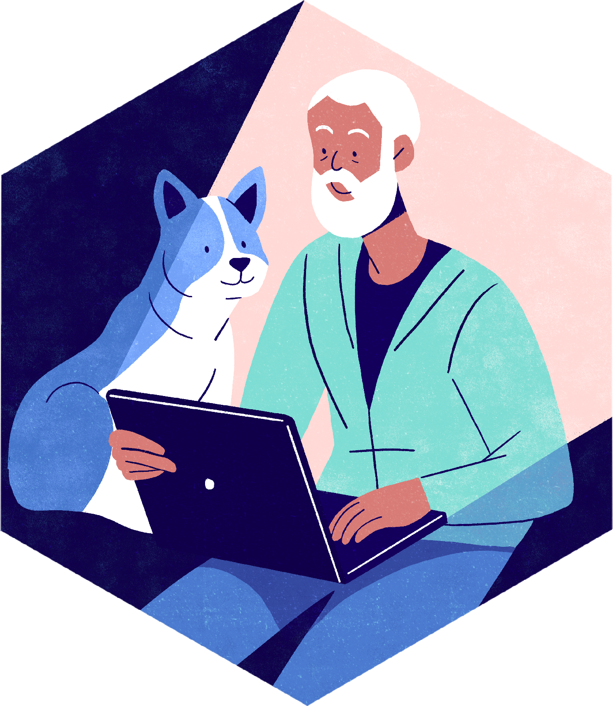

rOpenSci program
Neprofitna rOpenSci inicijativa koja se bavi reproducibilnim i otvorenim istraživanjem koristeći deljene podatke i ponovo upotrebljiv (eng. reusable) softver. U okviru projekta rOpenSci Champions Program raspisana su dva konkursa koja su primarno namenjena za osobe iz istorijski i sistematski isključenih i manje zastupljenih grupa koje su zainteresovane za softver otvorenog koda. Dva odvojena poziva su otvorena za one koji žele da steknu nove veštine u programskom jeziku R i za one koji bi pružili usluge mentorstva prijavljenim polaznicima. Detalji oba konkursa su dostupni na sajtu: https://ropensci.org/champions/.

Slika je dostupna pod CC BY licencom i preuzeta sa sajta https://ropensci.org/champions/.